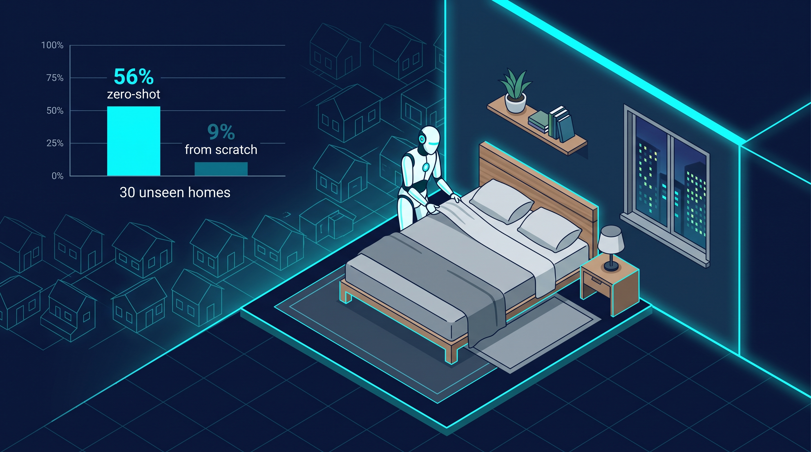
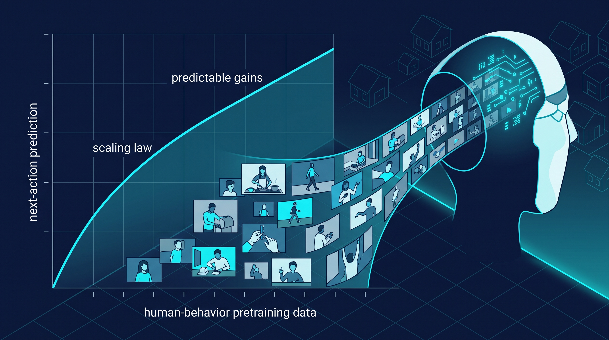
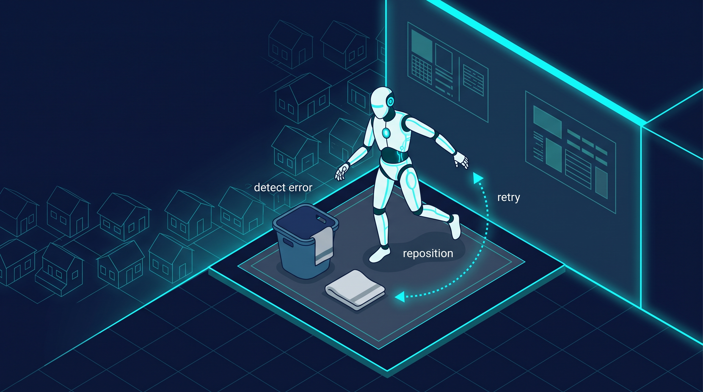

56% Is the New State of the Art: Figure's Helix 2.5 and the First Scaling Law for Physical AI
On September 17, Figure AI did something no humanoid company had attempted in public: it rented 30 homes across the Bay Area, sent a Figure 03 humanoid into each one, and asked it to make beds, fold towels, and tidy living rooms. The robot had never entered any of those homes. No data had ever been collected in them. No fine-tuning touched their layouts, furniture, or objects. The same frozen model checkpoint — one set of weights, unchanged — ran in all 30 houses. The result: 237 successful completions out of 420 trials, or 56%.
That number deserves a careful read rather than a headline. Figure awarded no partial credit: a bed with one crooked pillow counted as a failure, and every safety intervention counted as a failure rather than a gray area. More importantly, an otherwise identical model — same architecture, same task data, but trained from scratch without broad pretraining — managed just 9%. The gap between 9% and 56% is the entire story of Helix 2.5. It is the first controlled measurement of what large-scale human-behavior pretraining actually buys you on a humanoid platform, and it is the most important data point in physical AI this month.

What "zero-shot" actually means here
Figure's use of the term is narrower — and more honest — than the marketing usually allows. Zero-shot does not mean the robot invented bed-making from nothing. The three behaviors were specified and trained with demonstrations collected elsewhere; what was unseen was the deployment environment. None of the evaluation homes, their room dimensions, furniture placement, lighting, clutter, or objects appeared anywhere in the training data, and no single evaluation task represented more than 1.9% of the Index pretraining dataset. What transferred was the prior: a broad understanding of how humans manipulate the physical world, learned from Figure's Index dataset of human behavior and applied to new rooms and new objects on the first try.
The task breakdown makes the picture more honest still. Bed making succeeded on 94 of 140 attempts (67%) — the strongest result. Towel folding hit 87 of 140 (62%). Tidying toys into a basket lagged at 56 of 140, just 40%. Each trial was long-horizon and whole-body: all 13 to 15 scattered toys had to end up in the basket, every towel folded and placed, both pillows and the comforter corners positioned correctly. The pattern is instructive for anyone deploying robots in the real world: the structured, deformable-but-constrained tasks (beds, towels) transferred far better than the open-ended tidying task, where clutter and object variety punish any model. Generalization is not a binary property; it has a shape, and that shape tells you where to deploy first.
The first measured scaling law
But the number that matters most to engineers is not 56% — it is the ablation behind it. With task data and architecture held constant, Index pretraining alone moved zero-shot success from 9% to 56%. That is a clean isolation of the pretraining effect, the kind of experiment the field has been asking for since Figure launched Index in August. As independent analysis noted, this is exactly the comparison needed to show whether human video data actually improves transfer to the robot — and now the evidence exists, measured on a humanoid, in 30 real homes.
Figure went one step further and reported the first measured human-to-robot transfer scaling law on a humanoid platform: as pretraining data scales, downstream next-action prediction improves predictably enough that researchers could forecast test loss to four decimal places before training. Scaling laws are what turned language models from alchemy into engineering — the moment you can predict the next checkpoint's loss, you can budget compute, schedule hardware, and plan deployments with a spreadsheet instead of a prayer. Figure is claiming that instrument now exists for physical AI.

The scale of the bet is commensurate. Index currently generates roughly 35 minutes of human experience every second, and Figure has backed the program with a $3.5 billion compute commitment. Helix 2.5 also matched the performance of the prior Helix 02 policy while using half as much adaptation data — which Figure frames as behavior specification getting 2x cheaper while deployment scope expanded 30x, from a single environment to thirty. Whether or not you accept the company's arithmetic, the direction is unambiguous: pretraining is doing the heavy lifting, and task-specific data is getting cheaper.
The reliability gap nobody can hand-wave
Now the necessary cold water. 56% is a research milestone, not a product specification. A robot that fails 44% of long-horizon tasks cannot work unsupervised — not in a home, and not on a factory floor, where the industry has already learned what the reliability bar costs. BMW's Spartanburg pilot needed some 1,250 operating hours, revised safety concepts with additional barriers, and upgraded 5G coverage before anyone discussed deployment economics. The distance from 56% to 99% is the actual roadmap, and no amount of press-release polish shortens it.
What makes Figure's result useful anyway is the grading honesty. No partial credit. Interventions counted as failures. Full completion required, on tasks where one early error can derail a long sequence. That is the grading scheme the whole industry should adopt, because inflated benchmarks are how pilot programs die: the robot looks ready in the video, then meets a moved cart or an irregular tote on the production floor. One detail in the report deserves attention from control engineers — the robot's improved self-correction during longer tasks: stepping back, repositioning its body, changing stance, or moving around a bed to recover from mistakes and continue. Recovery behavior emerging from data scale rather than hand-coded exception handlers is precisely the kind of robustness that transfers to factories, where the environment changes between shifts.

Why this changes the data economics
The old deployment model is linear and painful: collect robot data at each site, fine-tune per site, repeat for every new facility. Costs scale with the number of deployments. Helix 2.5 proposes a different cost curve — pretrain once on human experience at massive scale, then transfer across sites with a fraction of the task-specific data. If the 2x-cheaper / 30x-wider arithmetic holds even approximately, the marginal cost of a new deployment collapses, and the data flywheel that already favors the biggest deployers starts spinning without per-site data collection.
There is a factory corollary worth stating plainly. Homes are the hard case: cluttered, unstructured, full of deformable objects and tight spaces. Factory tasks are more structured by comparison — fixed workstations, known parts, repeatable motions. If a frozen checkpoint can generalize across 30 unseen living rooms at 56%, structured industrial tasks are likely to see substantially better transfer. This does not replace the sim-to-real pipeline — thousands of robots training in parallel inside physics simulations remains the cheapest source of dangerous, edge-case-rich experience. It adds a second fuel: human experience video at planetary scale, flowing through a measured scaling law. Two fuels, one fire. The companies that master both will set the pace.
Watch the slope, not the point. 56% will be a footnote within a year — either the transfer scaling law keeps delivering predictable gains and the number climbs on schedule, or it saturates and the field learns something equally valuable. Either way, Figure just gave physical AI its first honest benchmark: a controlled experiment, a clean ablation, and a forecast you can check. The industry spent years optimizing demos. Now it has a number with error bars. That is what progress looks like when it starts being engineering.